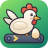
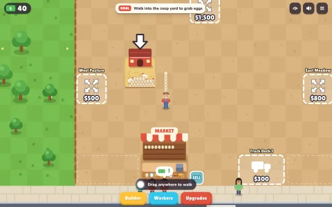
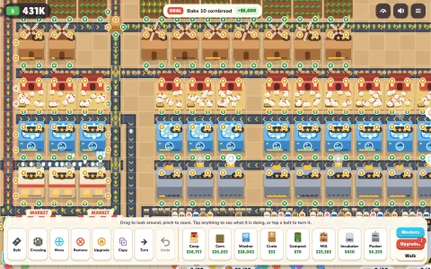
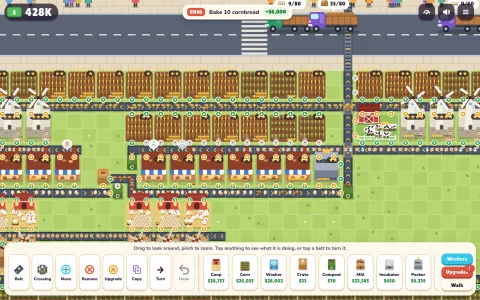

Cozy farm automationCluckworks
From a basket of eggs to bread by the truckload.
Start with one coop and a roadside stand. Put your egg money back to work and build a farm that runs on conveyor belts.
Play in your browser Game page & Fire tablet downloadInline playback is unavailable. Open the trailer video.
Trailer description
A farmer picks up an egg, sells it at a roadside stand, and buys more coops. Eggs travel along new belts to washers and packers, then leave by truck. Across the road, flour, milk, and eggs feed bakeries, and another truck hauls away bread. The farmer checks production and shortens a belt route before the camera pulls back to show the whole farm. An upbeat instrumental score plays with game sounds.
From one coop to a whole farm

Carry your first eggs
Fill the roadside stand by hand and sell eggs to your first shoppers.

Put your belts to work
Reinvest in belts, washers, and packers that turn loose eggs into cartons.

Ship bread by the truckload
Connect fields, mills, and bakeries to keep the bread trucks rolling.